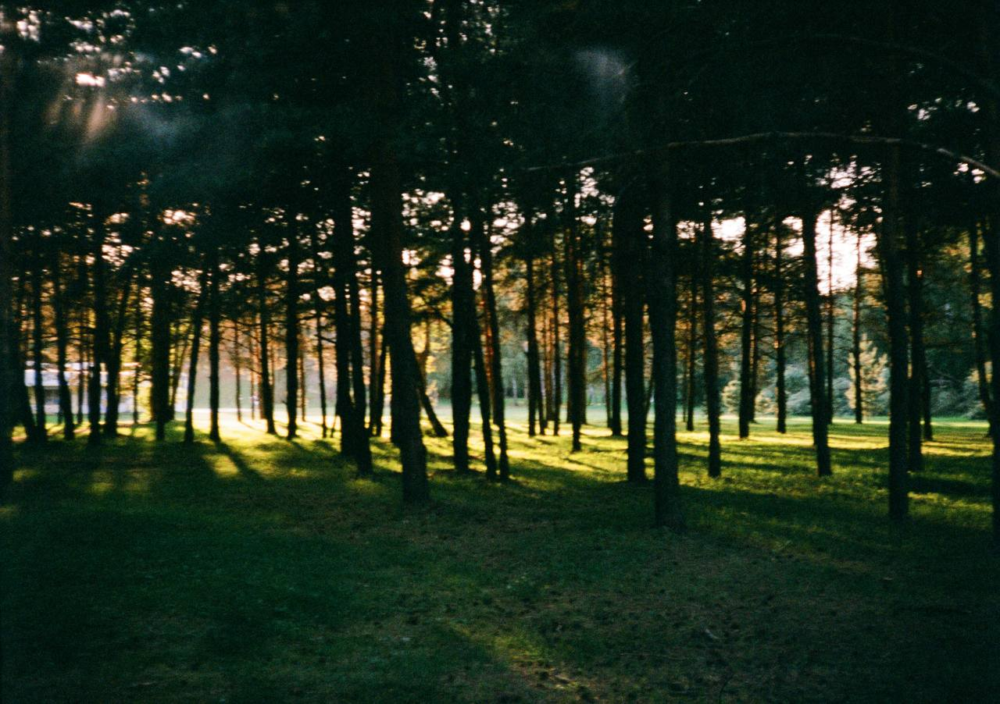
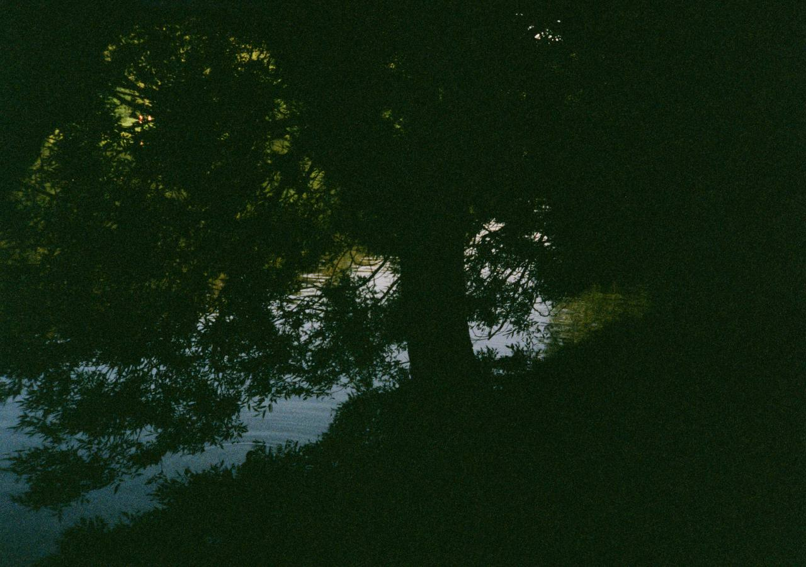
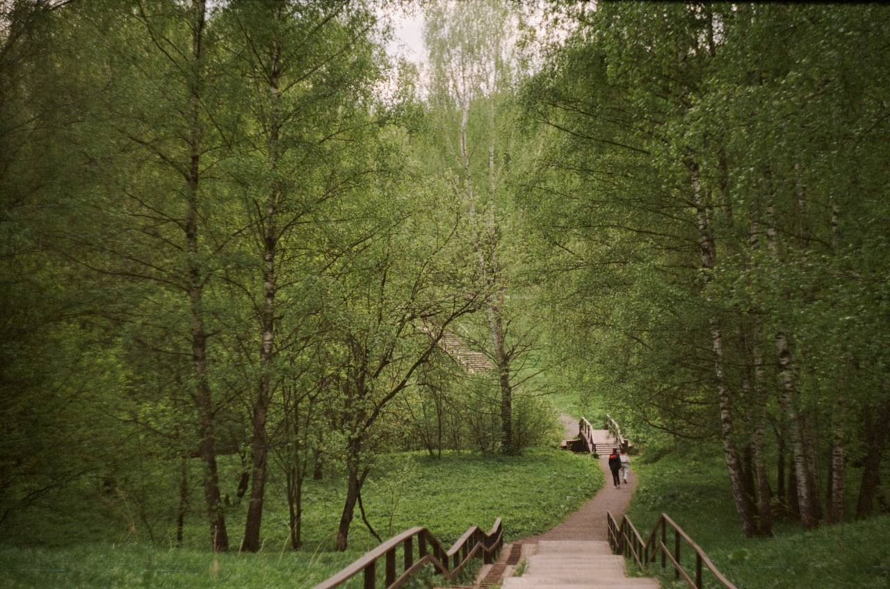

Галерея
Ярославь, Россия
август 2024
Вечер. Парк Подзеленье. Всё тихо...

Раменский район, Московская область, Россия
август 2025
Если бы знали Вы как мне дороги Подмосковные вечера...

Москва, Россия
апрель 2025
Прогулка после рабочего дня - важный ежедневный ритуал полезный для развития навыка замечать красоту вокруг

Обо мне
Я фотограф-любитель, вдохновлён природой, зелёными ландшафтами и атмосферой тишины.
Контакты
Почта: s0rryman@mail.ru